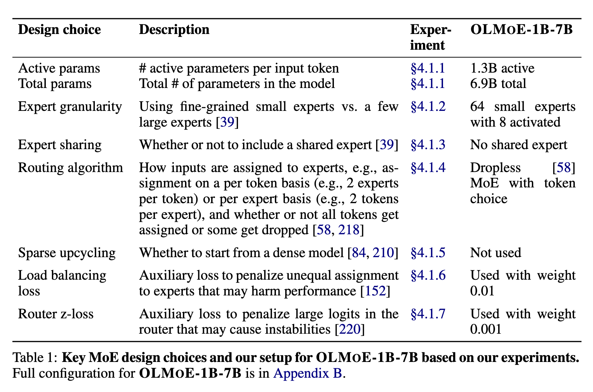

OLMoE: Open Mixture-of-Experts Language Models
Abstract
We introduce OLMoE, a fully open, state-of-the-art language model leveraging sparse Mixture-of-Experts (MoE). OLMoE-1B-7B has 7 billion (B) parameters but uses only 1B per input token. We pretrain it on 5 trillion tokens and further adapt it to create OLMoE-1B-7B-Instruct. Our models outperform all available models with similar active parameters, even surpassing larger ones like Llama2-13B-Chat and DeepSeekMoE-16B. We present various experiments on MoE training, analyze routing in our model showing high specialization, and open-source all aspects of our work: model weights, training data, code, and logs.

Key decisions in designing an MoE model include determining the number of activated and total parameters, the design of the experts (e.g., granularity, whether or not to include shared experts), and the choice of the routing algorithm. Moreover, training an MoE model can involve initializing from a dense model (sparse upcycling) and changing the training objective, such as including auxiliary load balancing and router z-losses. (p. 5)
In summary, we use 1.3B active parameters out of a total of 6.9B, with 8 activated experts out of 64 per layer. We use dropless token choice routing [58]: for each input token, the learned router network determines 8 experts to process it. We train OLMOE-1B-7B from scratch with two auxiliary losses: load balancing loss (LLB) [152] and router z-loss (LRZ ) [220], which we define and experiment with in §4.1.6 and §4.1.7, respectively. We multiply them with respective loss weights, α and β, and sum them linearly with the cross entropy loss (LCE) to arrive at our final training loss (p. 5)
To all sources above, we apply a filter that removes all documents with a sequence of 32 or more repeated n-grams, where an n-gram is any span of 1 to 13 tokens. For the StarCoder subset, we also remove any document that is either from a repository with fewer than 2 stars on GitHub, or whose most frequent word constitutes over 30% of the document, or whose top-2 most frequent words constitute over 50% of the document. (p. 6)
We find that our MoE reaches the performance of the dense model with ∼3× fewer tokens equivalent to ∼3× less compute measured in FLOPs. However, due to the additional memory overhead of training the MoE with its 7B total parameters, it processes fewer tokens per second than the dense model (23,600 tokens per second per GPU for the MoE vs. 37,500 for dense). Thus, in terms of training time, it reaches the performance of the dense model only ∼2× faster. (p. 9)
However, we find that there are diminishing returns to granularity. The additional increase to 64 experts with 8 active ones ((64 8 ) = 4, 426, 165, 368 combinations) improves downstream metrics by a smaller amount of 1–2%. (p. 10)
For EC, each expert selects a fixed number of tokens from the incoming sequence. By design, this leads to each expert processing the same number of tokens. This is the main benefit of EC as it ensures perfect load balance, which improves training throughput and removes the need for a load balancing loss. The main downside of EC is that it is not easily usable for autoregressive generation where a single token is processed at each step rather than the entire sequence in one [141]. Another potential downside is that EC can lead to token dropping, where some tokens are not selected by any expert, which can hurt performance [58]. At the same time, it can lead to some tokens being processed by multiple experts, which could also be beneficial as it allows the model to allocate more compute to some tokens [218]. (p. 11)
For TC, each token selects a fixed number of experts. This can lead to many tokens choosing the same expert, hurting training efficiency. Therefore it is common to use TC with a load balancing loss [152] to encourage equal distribution. (p. 11)
To compute the load balancing loss (LLB) we multiply the fraction of tokens fi routed to one expert Ei with the total routing probability Pi allocated to Ei for one batch and sum it across the number of experts NE (p. 12)
ultiplied with an optional loss weight, β (see Equation 2), to determine the magnitude of the loss co (p. 13)
we confirm that across training loss, validation loss, and downstream performance adding the router z-loss improves stability (less spikes) and quality (lower loss and higher downstream performance). (p. 14)
We find that OLMOE-MIX leads to clear gains on all three downstream metrics, especially MMLU. DCLM-Baseline has been created through a series of dataset ablations targeting MMLU and other downstream metrics, which explains these results. We also compare adding Reddit and FLAN to our mix as detailed in Appendix F, but do not find consistent performance gains. (p. 14)
we find a truncated normal initialization leads to more stable training and better performance than a regular normal initialization. The difference between the two initializations only becomes clear at around 450 billion tokens, where the model with the normal initialization starts to diverge. This is despite both models using the same configuration except for the difference in weight initialization. Having to train for hundreds of billions of tokens until an experiment provides a clear signal is one of the key challenges of pretraining ablations. (p. 15)
This is likely because the non-parametric layer normalization leads to a large number of spikes in the gradients as seen in Figure 16. We clip gradients at 1.0, which prevents these spikes from leading to very large and potentially disruptive parameter updates. However, the clipped gradients may still harm the performance of the model as they are no longer the true gradients. (p. 15)
the RMSNorm parameters in weight decay as we find that it performs slightly better (p. 16)
Some works have reported stability improvements from adding layer normalization after the query and key projections (“QK-Norm”) (p. 16)
We find that QK-Norm leads to some stability and performance improvements. (p. 16)
Router saturation thus corresponds to whether the router weights are still learning which expert will process certain data. A value of 100% indicates that the router at the intermediate checkpoint will route to the same experts as the final checkpoint router. However, even at 100% saturation the router weight can still change and adapt the exact router probability for each expert. (p. 19)
Dai et al. [39] do not use an MoE in the first layer as they find that load balancing converges more slowly for the first layer. This is likely linked to our findings on saturation. Because routing in the first layer saturates slower, the experts that certain input data get routed to frequently change. These changes may lead to one expert suddenly getting significantly more data than others thereby impairing load balancing. (p. 19)
If multiple expert pairs have high co-activation, it may suggest that these experts could be merged, benefiting less from keeping them separate. In a distributed setup, we could place highly co-activated experts on the same device to reduce communication costs during model inference. (p. 20)
@misc{Muennighoff_Soldaini_Groeneveld_Lo_Morrison_Min_Shi_Walsh_Tafjord_Lambert_et al._2024, title={OLMoE: Open Mixture-of-Experts Language Models}, url={[https://arxiv.org/abs/2409.02060v1](https://arxiv.org/abs/2409.02060v1)}, abstractNote={We introduce OLMoE, a fully open, state-of-the-art language model leveraging sparse Mixture-of-Experts (MoE). OLMoE-1B-7B has 7 billion (B) parameters but uses only 1B per input token. We pretrain it on 5 trillion tokens and further adapt it to create OLMoE-1B-7B-Instruct. Our models outperform all available models with similar active parameters, even surpassing larger ones like Llama2-13B-Chat and DeepSeekMoE-16B. We present various experiments on MoE training, analyze routing in our model showing high specialization, and open-source all aspects of our work: model weights, training data, code, and logs.}, journal={arXiv.org}, author={Muennighoff, Niklas and Soldaini, Luca and Groeneveld, Dirk and Lo, Kyle and Morrison, Jacob and Min, Sewon and Shi, Weijia and Walsh, Pete and Tafjord, Oyvind and Lambert, Nathan and Gu, Yuling and Arora, Shane and Bhagia, Akshita and Schwenk, Dustin and Wadden, David and Wettig, Alexander and Hui, Binyuan and Dettmers, Tim and Kiela, Douwe and Farhadi, Ali and Smith, Noah A. and Koh, Pang Wei and Singh, Amanpreet and Hajishirzi, Hannaneh}, year={2024}, month=sep, language={en} }